in this project, we created a design from Y Combinator startup Lancey.
From their launch statement: "Lancey is a way to create interactive product demos to share with your business' prospects and customers.
Lancey gives them the ability to interact and engage with your product without spinning up trial
accounts or sandboxes in less than 5 mins right from your website."
We needed to design an interface designer, as well as a way for users to keep track of their projects and
share them with their users.
initial sketches
to start, we created 4 different sketches for our design.
in sketches, we explored different flows from the home page, as well as different concepts of
editing projects.
sketch 1: the edit project page allows users to drag and drop components + add interaction to them by right clicking:
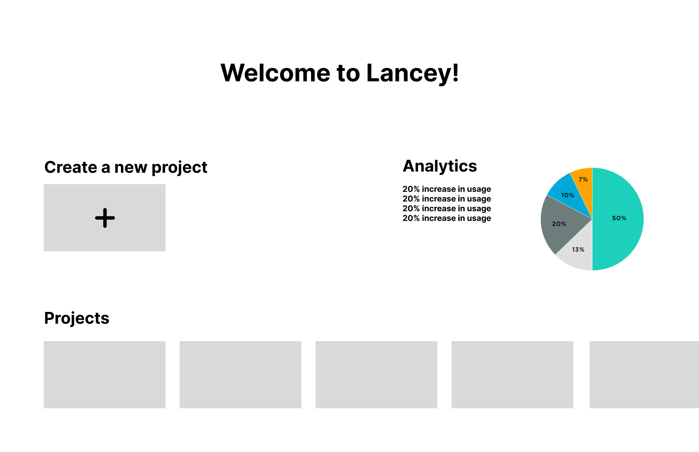
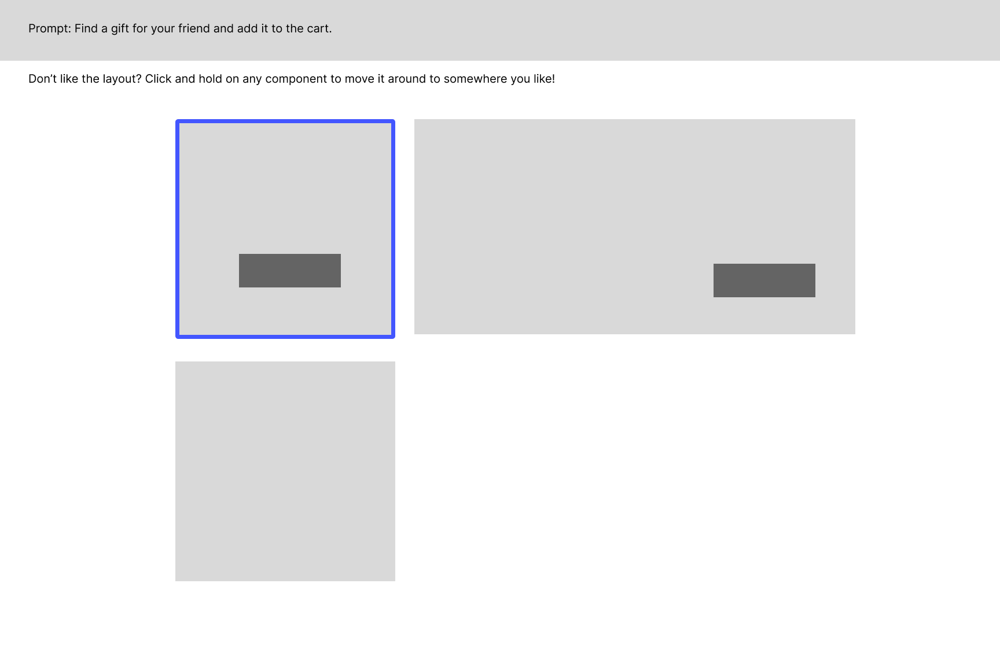
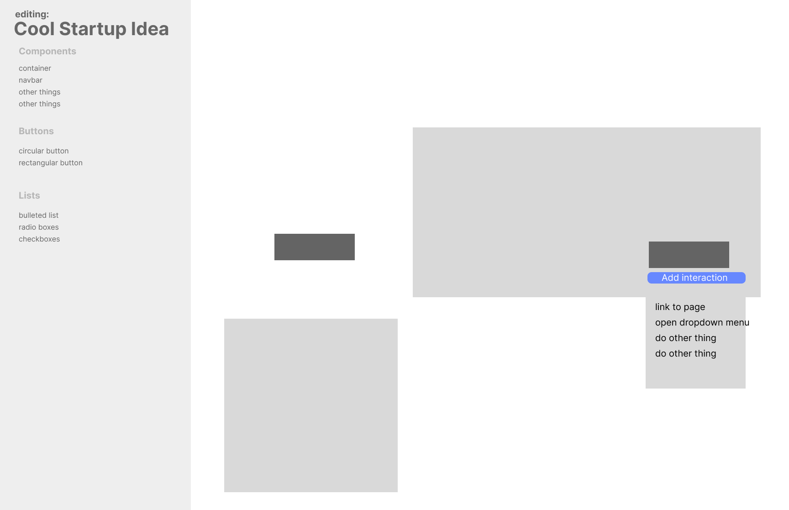
sketch 2: more component based editing, with a more clearly defined projects page (edit/view/share).
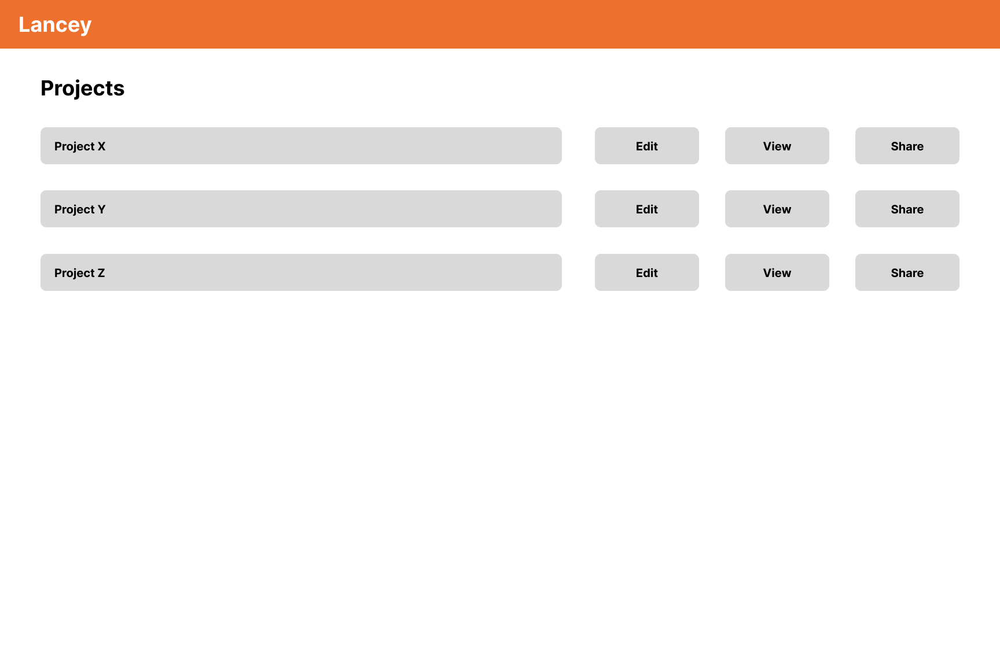
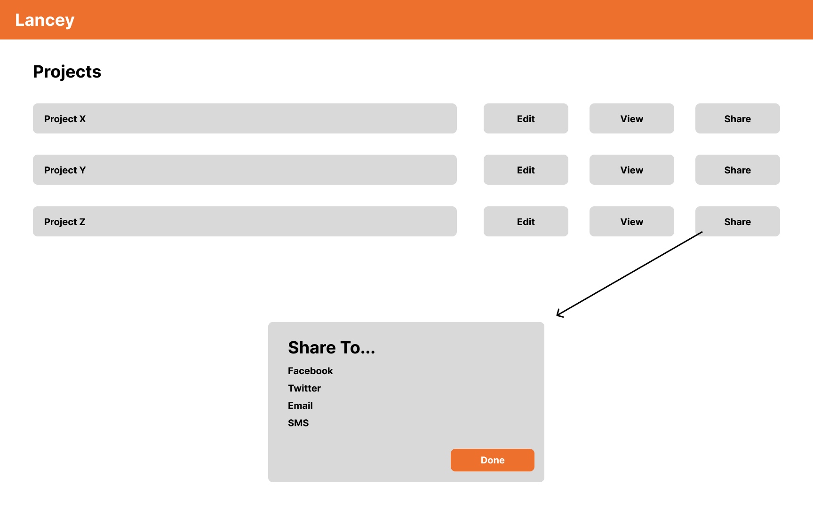
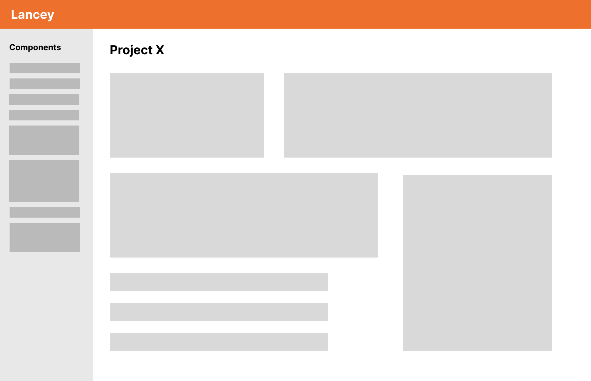
sketch 3: a video based demo software instead of interactive component-based page.
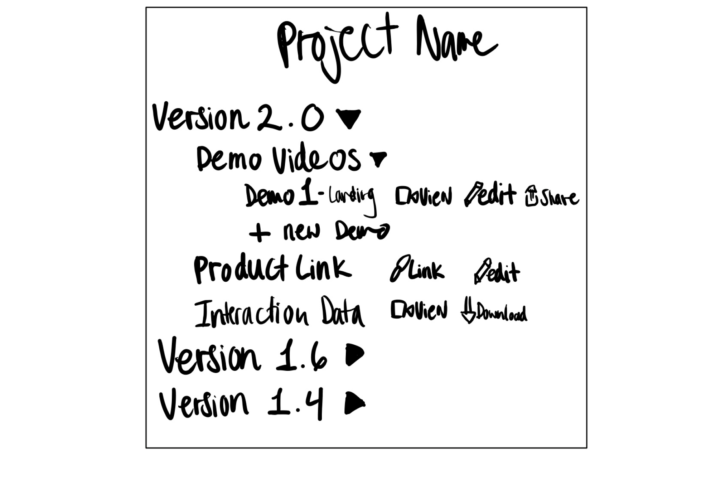
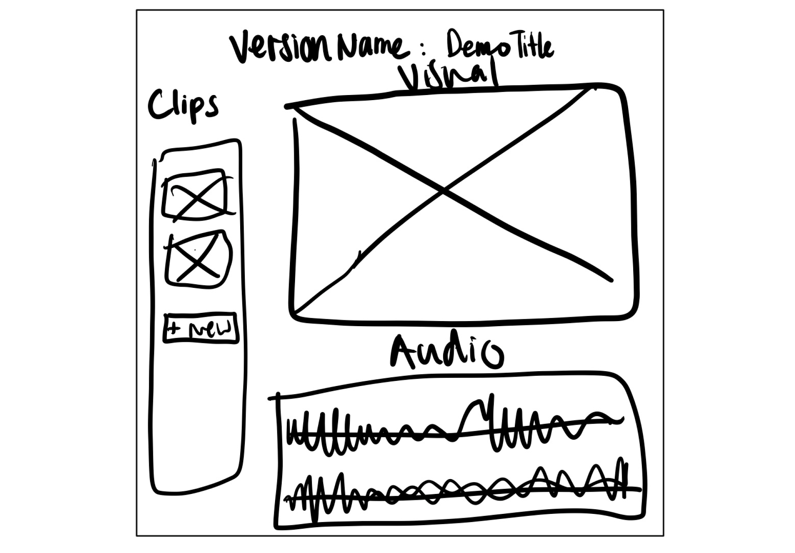
sketch 4: a clearly defined analytics page design, with a vertical navbar as a menu for everything you'd want for a single project.
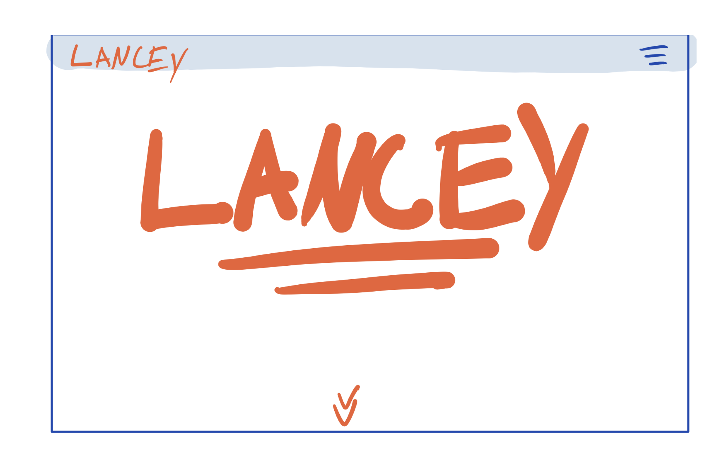
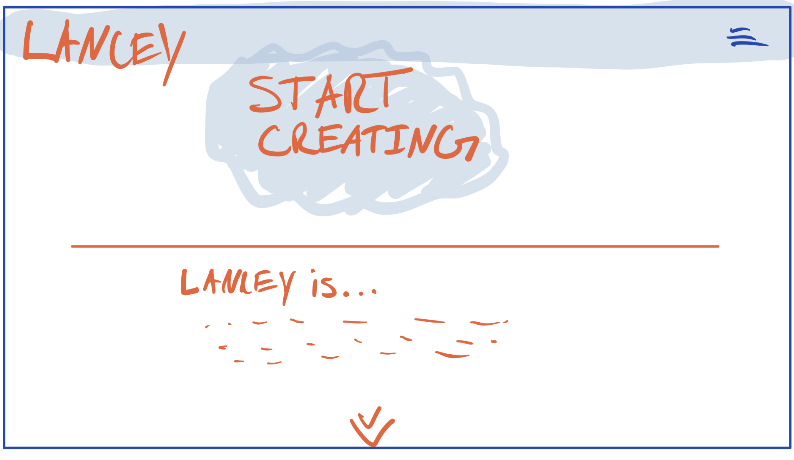
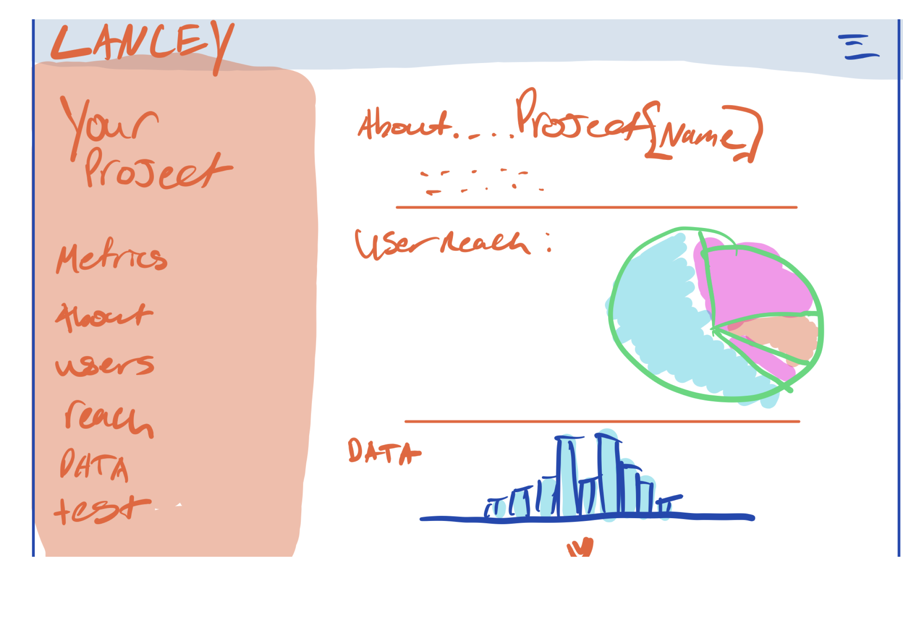
wireframe prototype
then we created a wireframe to flush out a single design.
we incorporated different sketch ideas into this single design:
sketch 1/2's component based editors + sketch 4's analytics page.
home page
what we do
login
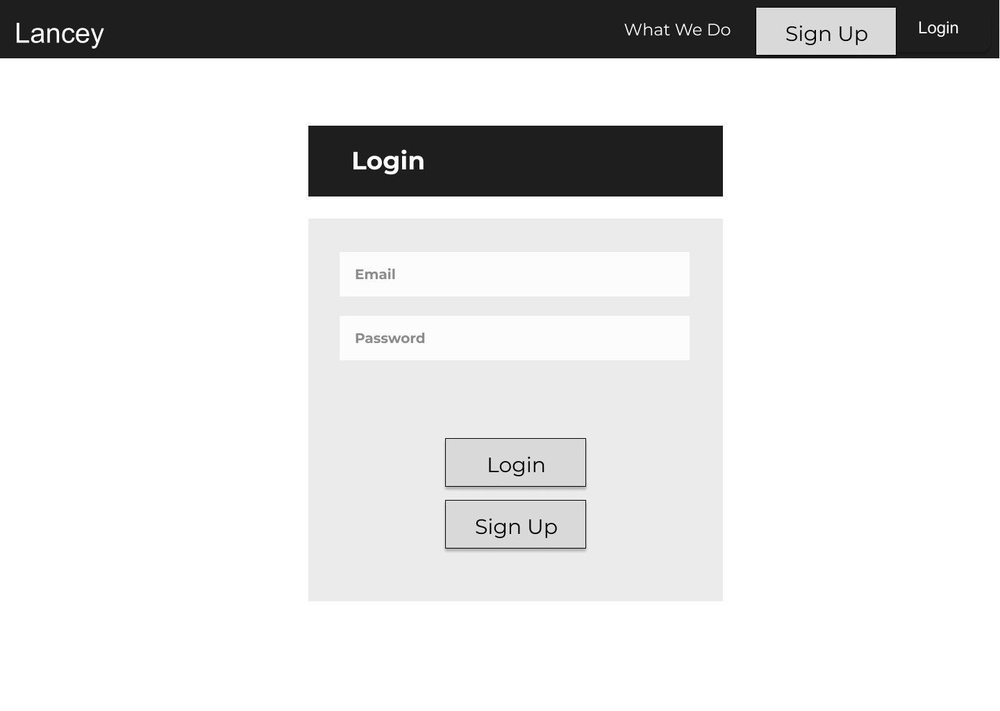
business user dashboard
analytics
project page
new project page
hi-fi prototype
finally, we created a hi-fi prototype, which refined our wireframe into a more complete product.
while designing this prototype, we received some feedback:
user dashboard page: affordances weren't super clear... edit project buttons were small. we changed this so that users just click on the thumbnail of a project to edit it.
user dashboard page: used to have too much focus on the welcome message, and not enough on projects. We made the thumbnails area bigger to fix this
various pages: make sure there is always a back button that goes to the previous page in the flow
login page: make distinction between login and signup more clear. we moved the signup button outside of the orange box to fix this.
analytics should not be on the same page where users edit their project—it became too cluttered. we separated those pages to fix this.
final hifi prototype
here's a video showing our hifi prototype's flow! try watching in fullscreen.
user testing
we then submitted our hifi prototype to usertesting.com so we could get some real feedback.
We prompted the users to complete this task:
You will be testing an interactive website mockup. The website itself is for a service that lets businesses prototype their own designs for online interfaces... so you will be testing the interface of an interface designer.
In “Flow 2” when the test begins, log into your account and find the “VideoPlayer” project.
If user watch time looks low to you, edit the project and change 2 things about it. Please note that the editing won’t actually respond in this demo, but move your mouse where you would to make those edits.
If user watch time looks high, simply preview the project.
Throughout this process, please think aloud and share your thoughts with us.
We then created these post-test questions for the testers:
How did you find the overall navigation of the site?
Were you able to complete the task at hand easily?
Was the hierarchy and seperation of pages clear?
user feedback
Overall our users were generally confused as to whether they completed the task. All the
users were eventually able to complete the task, but upon completion, some were unsure
if they had done it correctly. One user noted that he didn’t know where to login, and
tried using the actual Figma login page to do so. Another user found the task un-intuitive
because they couldn't directly edit the area we wanted them to look at, instead they had
to navigate to the edit button on the top of the screen rather than click on the section
that had the information we asked them to look at. This was our original intention with the
edit button but going forward we may consider allowing edits directly from our metrics page.
Generally, all users struggled with the “edit two things about the project” task. After they
clicked on the edit button, the options that were presented to “edit” did not map internally
with our users signaling that this would function as an edit. They were able to figure it out,
but commented on the lack of clarity and were not sure if they had properly completed the task.
assessment of testing results
Overall, our test results were not in-line with our expectations. While most users were able to
figure out the task, they all noted the difficulty of doing so. We were expecting the task to be
straightforward. Based on the testing, we would add text below the login button in the top right
hand corner of the first screen indicating “login”. We would also add functionality to our metrics
dashboard that allows users to directly click on each subtitle for further exploration and edits.
We would also change the “components” tab on the Video Player edit screen to better represent potential
edits that can be made to the project. Unfortunately, our post test questions were not presented to our testers for reasons unknown to us.
Complications in our user testing made the efficacy of our design unclear. Had we more clearly described to the users
what their task on the "edit project" page was, perhaps we would have achieved more substantial feedback.